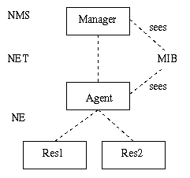
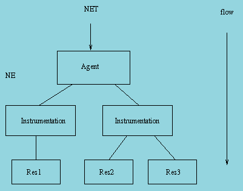
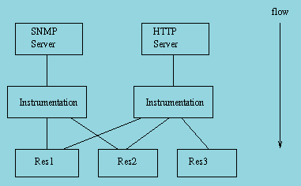
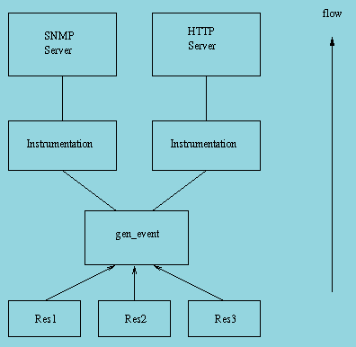

View Source Introduction
The Operation and Maintenance (OAM) support in OTP consists of a generic model for management subsystems in OTP, and some components to be used in these subsystems. This section describes the model.
The main idea in the model is that it is not tied to any specific management protocol. An Application Programming Interface (API) is defined, which can be used to write adaptations for specific management protocols.
Each OAM component in OTP is implemented as one sub-application, which can be included in a management application for the system. Notice that such a complete management application is not in the scope of this generic functionality. However, this section includes examples illustrating how such an application can be built.
Terminology
The protocol-independent architectural model on the network level is the well-known client-server model for management operations. This model is based on the client-server principle, where the manager (client) sends a request from a manager to an agent (server) when it accesses management information. The agent sends a reply back to the manager. There are two main differences to the normal client-server model:
- Usually a few managers communicate with many agents.
- The agent can spontaneously send a notification, for example, an alarm, to the manager.
The following picture illustrates the idea:

The manager is often referred to as the Network Management System (NMS), to emphasize that it usually is realized as a program that presents data to an operator.
The agent is an entity that executes within a Network Element (NE). In OTP, the NE can be a distributed system, meaning that the distributed system is managed as one entity. Of course, the agent can be configured to be able to run on one of several nodes, making it a distributed OTP application.
The management information is defined in a Management Information Base (MIB). It is a formal definition of which information the agent makes available to the manager. The manager accesses the MIB through a management protocol, such as SNMP, CMIP, HTTP, or CORBA. Each protocol has its own MIB definition language. In SNMP, it is a subset of ASN.1, in CMIP it is GDMO, in HTTP it is implicit, and using CORBA, it is IDL.
Usually, the entities defined in the MIB are called Managed Objects (MOs), although they do not have to be objects in the object-oriented way. For example, a simple scalar variable defined in a MIB is called an MO. The MOs are logical objects, not necessarily with a one-to-one mapping to the resources.
Model
This section presents the generic protocol-independent model for use within an OTP-based NE. This model is used by all OAM components and can be used by the applications. The advantage of the model is that it clearly separates the resources from the management protocol. The resources do not need to be aware of which management protocol is used to manage the system. The same resources can therefore be managed with different protocols.
The entities involved in this model are the agent, which terminates the management protocol, and the resources, which is to be managed, that is, the actual application entities. The resources should in general have no knowledge of the management protocol used, and the agent should have no knowledge of the managed resources. This implies that a translation mechanism is needed, to translate the management operations to operations on the resources. This translation mechanism is usually called instrumentation and the function that implements it is called instrumentation function. The instrumentation functions are written for each combination of management protocol and resource to be managed. For example, if an application is to be managed by SNMP and HTTP, two sets of instrumentation functions are defined; one that maps SNMP requests to the resources, and one that, for example, generates an HTML page for some resources.
When a manager makes a request to the agent, the following illustrates the situation:

The mapping between an instrumentation function and a resource is not necessarily 1-1. It is also possible to write one instrumentation function for each resource, and use that function from different protocols.
The agent receives a request and maps it to calls to one or more instrumentation functions. These functions perform operations on the resources to implement the semantics associated with the MO.
For example, a system that is managed with SNMP and HTTP can be structured as follows:

The resources can send notifications to the manager as well. Examples of notifications are events and alarms. The resource needs to generate protocol-independent notifications. The following picture illustrates how this is achieved:

The main idea is that the resource sends the notifications as Erlang terms to a
dedicated gen_event process. Into this process, handlers for the different
management protocols are installed. When an event is received by this process,
it is forwarded to each installed handler. The handlers are responsible for
translating the event into a notification to be sent over the management
protocol. For example, a handler for SNMP translates each event into an SNMP
trap.
SNMP-Based OAM
For all OAM components, SNMP adaptations are provided. Other adaptations might be defined in the future.
The OAM components, and some other OTP applications, define SNMP MIBs. These MIBs are written in SNMPv2 SMI syntax, as defined in RFC 1902. For convenience we also deliver the SNMPv1 SMI equivalent. All MIBs are designed to be v1/v2 compatible, that is, the v2 MIBs do not use any construct not available in v1.
MIB Structure
The top-level OTP MIB is called OTP-REG and it is included in the SNMP
application. All other OTP MIBs import some objects from this MIB.
Each MIB is contained in one application. The MIB text files are stored under
mibs/<MIB>.mib in the application directory. The generated .hrl files with
constant declarations are stored under include/<MIB>.hrl, and the compiled
MIBs are stored under priv/mibs/<MIB>.bin.
An application that needs to import an MIB into another MIB is to use the il
option to the SNMP MIB compiler:
snmp:c("MY-MIB", [{il, ["snmp/priv/mibs"]}]).If the application needs to include a generated .hrl file, it is to use the
-include_lib directive to the Erlang compiler:
-module(my_mib).
-include_lib("snmp/include/OTP-REG.hrl").Here is a list of some of the MIBs defined in the OTP system:
OTP-REG(in SNMP) contains the top-level OTP registration objects, used by all other MIBs.OTP-TC(in SNMP) contains the general Textual Conventions, which can be used by any other MIB.OTP-SNMPEA-MIB(insnmp) contains objects for instrumentation and control of the extensible SNMP agent itself. The agent also implements the standard SNMPv2-MIB (or v1 part of MIB-II, if SNMPv1 is used).
The different applications use different strategies for loading the MIBs into
the agent. Some MIB implementations are code-only, while others need a server.
One way, used by the code-only MIB implementations, is for the user to call a
function such as snmpa:load_mibs(Agent, [Mib]) to load the MIB, and
snmpa:unload_mibs(Agent, [Mib]) to unload the MIB. See the manual page for
each application for a description of how to load each MIB.